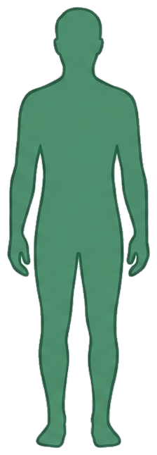

Mi plan
Volver al sitio
Iniciá sesión para ver tu plan
Tu plan de neuroalimentación se guarda en tu cuenta de SINAPTIX. Iniciá sesión (o creá una cuenta) para verlo acá.
Tu progreso con SINAPTIX
Datos clave

Antropometría
—
Aún no registras tus datos antropométricos
Cargar datos antropométricos
Detalle del plan de nutrición
Cierre
Todavía no generaste tu plan de neuroalimentación. Completá la encuesta y quedará guardado acá, listo para consultar cuando quieras.
Nutrición especializada
Creamos tu plan de neuroalimentación
Respondé esta breve encuesta y generamos tu propuesta de nutrición especializada al instante, ajustada a tu rutina, tu salud y tus datos personales.
Los campos marcados con son obligatorios.